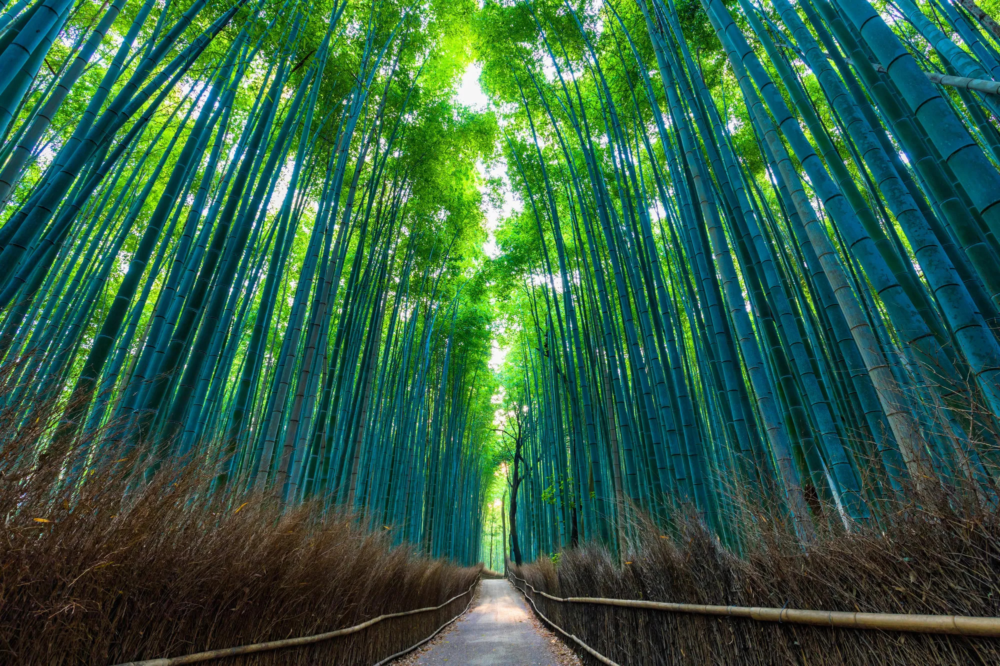
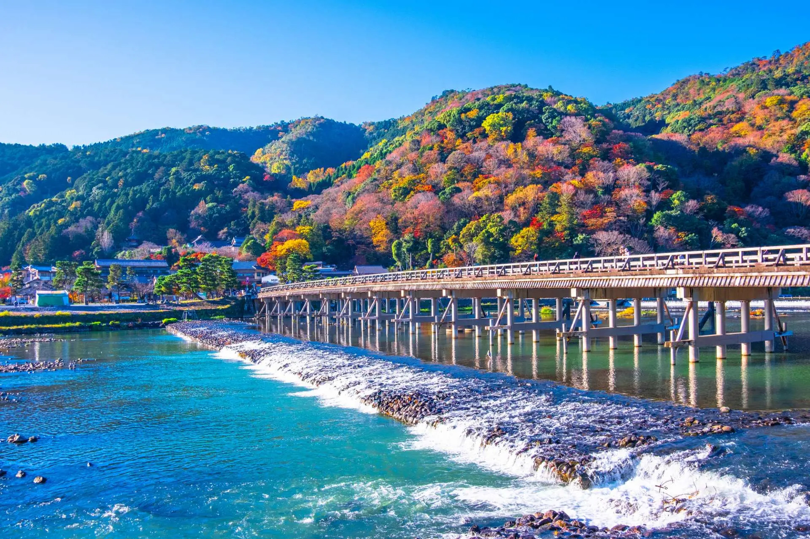
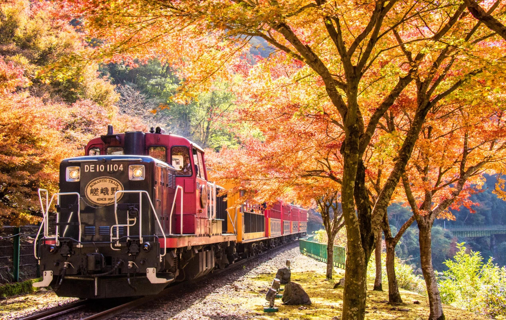
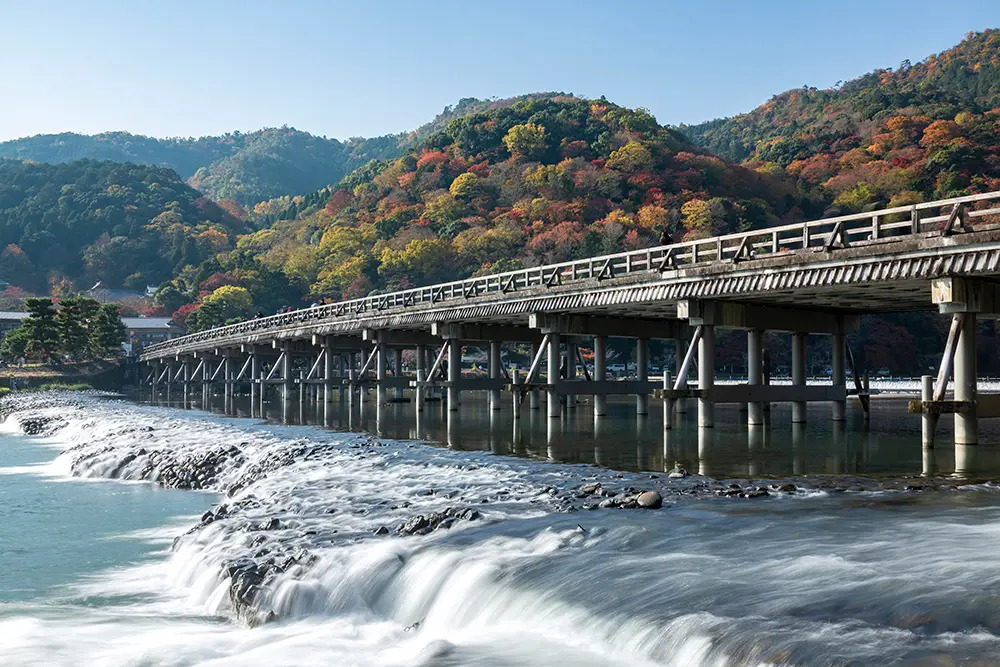
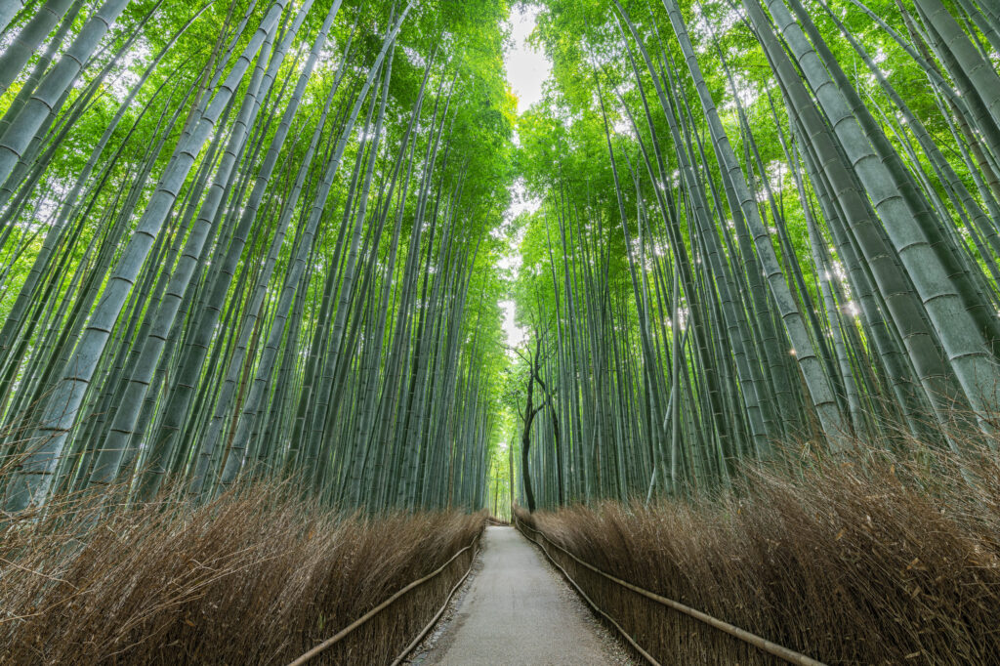
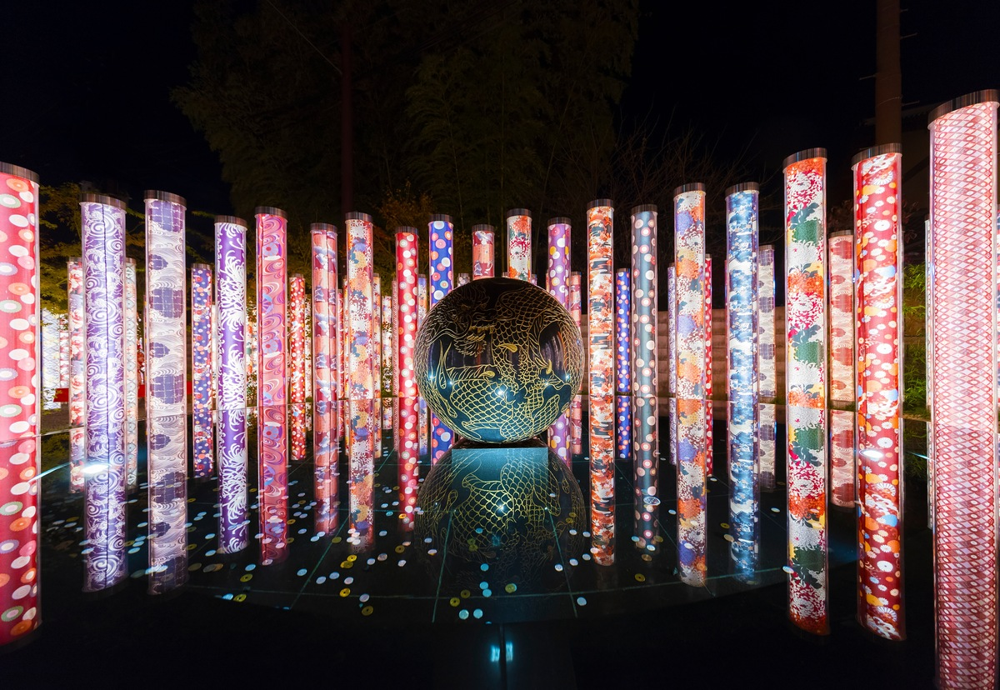

嵐山は京都市西京区・右京区にまたがる人気観光地です。 四季折々の美しい景色を楽しめることから、多くの観光客が国内外から訪れます。 春には桜、夏には青々とした竹林、秋には鮮やかな紅葉、冬にはふき景色と、 一年を通して異なる美しい景色を楽しむことができます。
嵐山のシンボルである「渡月橋」は、桂川にかかる歴史ある橋として知られ、 周辺には竹林の小径や天龍寺、キモノフォレストなど魅力的な観光スポットが点在しています。 ゆっくり散策しながら京都ならではの風情や歴史を感じられることも、嵐山の大きな魅力です。
また、和菓子や抹茶スイーツ、湯豆腐など京都らしいグルメも充実しており、 食べ歩きを楽しめるのも人気の理由の一つです。 自然・歴史・文化・グルメを一度に満喫できる嵐山は、京都観光で外せないおすすめのエリアです。

嵐山を代表する橋。桂川に架かる美しい景色は 四季を通して多くの観光客を魅了しています。

空高く伸びる竹が並ぶ幻想的な散策路。 嵐山を訪れたら外せない人気スポットです。

京友禅を使ったポールが並ぶ幻想的なスポット。 夜にはライトアップも楽しめます。
JR嵯峨嵐山駅・阪急嵐山駅・嵐電嵐山駅から徒歩圏内です。
春の桜、秋の紅葉が特に人気です。
朝9時頃は比較的人が少なく、ゆっくり散策できます。
春は桜、秋は紅葉が特に人気です。
湯豆腐、抹茶スイーツ、和菓子、食べ歩きグルメが楽しめます。
JR・阪急・嵐電の各駅から徒歩でアクセスできます。